DX0EME 2008
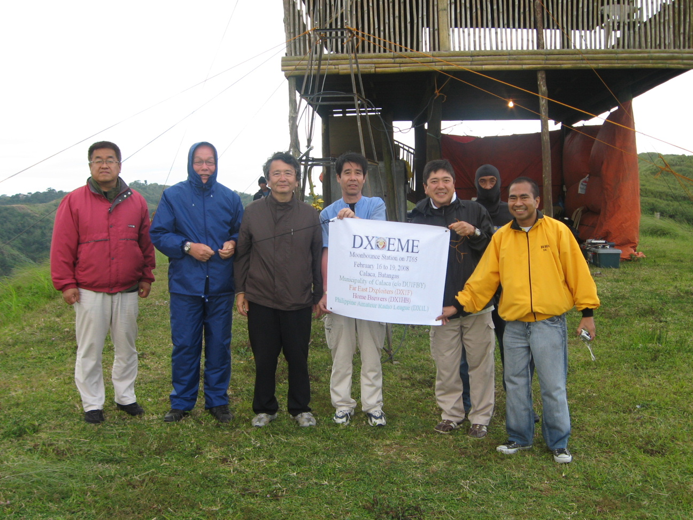
Batangas Philippines
16.Feb-18.Feb.2008
|
◎ DX0EME(フィリピン)で144/432MHzのEMEを運用 2008年2月16日-18日の3日間フィリピン(DU)の首都・マニラ近郊のリゾート地、 Batangas州のCalacaから144/432MHzのEMEの運用を行いました。 今回の"EMEプロジェクト"は運用地となったマニラ南部のBatangas州の行政地域、 Muniipality of Calacaの市長であるDU1FBY・Nas氏の計らいと、PARA (Philippine Amateur Radio League)、 地元のクラブのDX1HB (Home Brewers)、それに日本からFEDXPのメンバーが協力して行なわれました。 コールサインはDX0EME。"DX0"と言っても、今回はフィリピン本土(locator：PK03jw)からの運用です。 今回の運用は2007年3月のフィリピン領Spratly IsからのDX0JPに続く運用で、 DX0JPのリハーサルで2006年に運用したDZ1JPを加えると、3年連続のフィリピン領からの運用になります。 HF帯では"大雑魚"のフィリピンですが、V/UHFではまだ"珍局"なので多くの局からのリクエストに応えての144/432MHzのEMEの運用だけでした。 当初はEME人口の最も多い144MHzだけの予定でしたが、出かける直前になって、 直径25mの432MHzのデッシュを持つHB9Qからの要望で432MHzの21elの簡易アンテナ(ブーム込みで1Kg)も持参することになりました。 昨年のDX0JPでは冬の荒海の中を小船で50時間以上もかけて上陸するといった苦行を強いられましたが、 今回は本土からの運用で"気楽"のはずでした。 ところが、今回も思わぬ"アクシデント"と悪天候で厳しい運用となりました。 日本から参加のメンバーはDU1ZV(JA1BRK=米村)、JA1TGC(石毛)、7N4TJR(松田)、DU1IST(JF1IST=藤原)、 JF2XGF(大橋)に私(JA1RJU=小笠原)の5人。 2/16日午前中にマニラを出発、現地でアンテナ建設に取り掛かる事になりました。 "リニアー担当"のJF2XGF/大橋さんだけは仕事の関係で、16日の午後にマニラ到着、現地で合流することに。 今回の運用場所のCalacaは、マニラから高速道を加え、車で2時間ほどの街で、 われわれの運用地は郊外の高台にある分譲リゾート地の小高い丘の上の展望台(あずまや）でした。 現地に到着して心配だったのは、海抜600mほどのこの高地は意外に風が強いことでした。 簡単な屋根の付いた"あずまや"は木製で、柱を鉄のワイヤーを張って補強しただけの簡単なものでした。 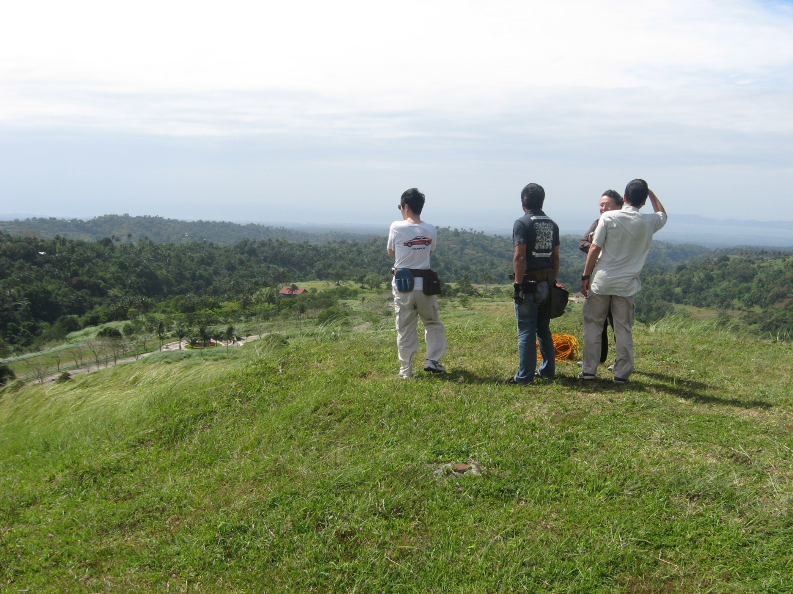 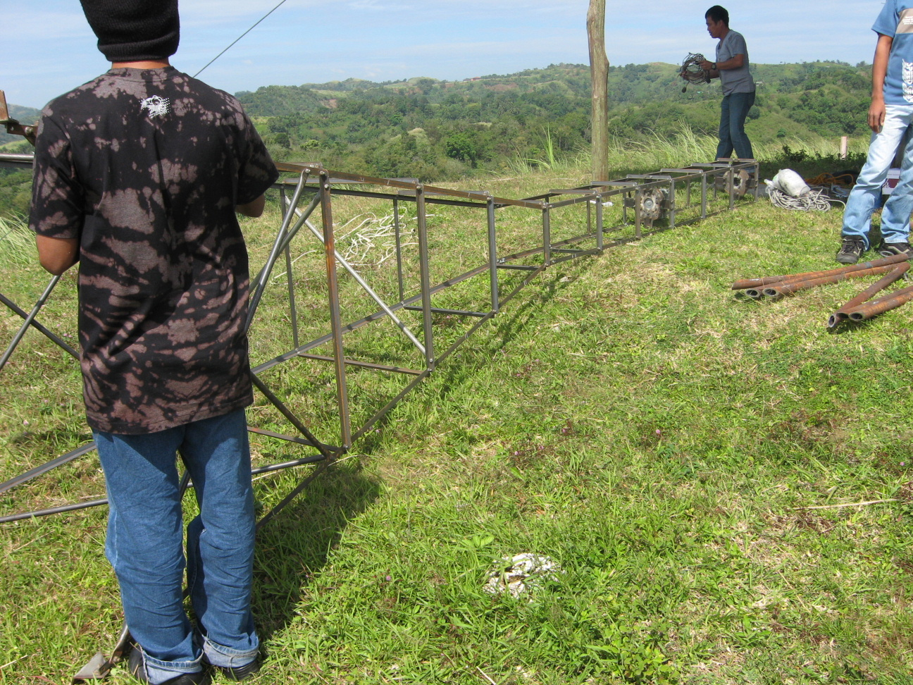 運用地となった海抜600mの高台の頂上に自作の4角タワーを建てる。 ◎ アンテナ立てから運用まで アンテナタワーの工事の前、この強風では危険なので、風を避けてアンテナタワーの設置場所を低い所に移動しようとの意見も出たのですが、 紹介してくれた市長(DU1FBY)が、せっかく見晴らしの良い場所を探してくれたのだから...と、 予定通りこの"あずまや"の横にタワーを建てることになりました。 しかし、この判断が結果的に3日間の運用予定を1日短縮する事になろうとは、この時は深く考えていませんでした。 昼前には自作の4角タワーも建ち、いよいよ10ELX2の144MHzアンテナの取り付けです。 昨年DX0JPで使った144MHzの13ELX2（クリエート製)のアンテナ、タワーなどはスプラトリー島を離れる際に全て現地に置いてきてしまったため、 今回は新たに移動用に設計(担当=JH0MHE・小林さん)した自作の10ELX2を使う事になりました。 このアンテナは移動先での組み立て作業を簡単にするため、エレメント関係を工具なしでクリップで留めする方式でした。 重さも一本4Kgと軽量に出来上がりました。 しかし、この強風ではエレメントをクリップ留めしただけでは、風で飛んでしまう恐れがあるため、 組み立ての際にエレメントを全てビニールテープでブームに巻き付け、補強する処理をしなければならず、 せっかくの"簡易取り付け"の設計も、結果的に数倍の手間がかる事になってしまいました。 何とか組み上げたアンテナでしたが、タワーに登って作業をしている藤原さんも、 叩きつけるような強風に取り付けに四苦八苦しています。 本来ならアンテナを降ろすほどの強風なのに、これから取り付けようとするのですから大変です。 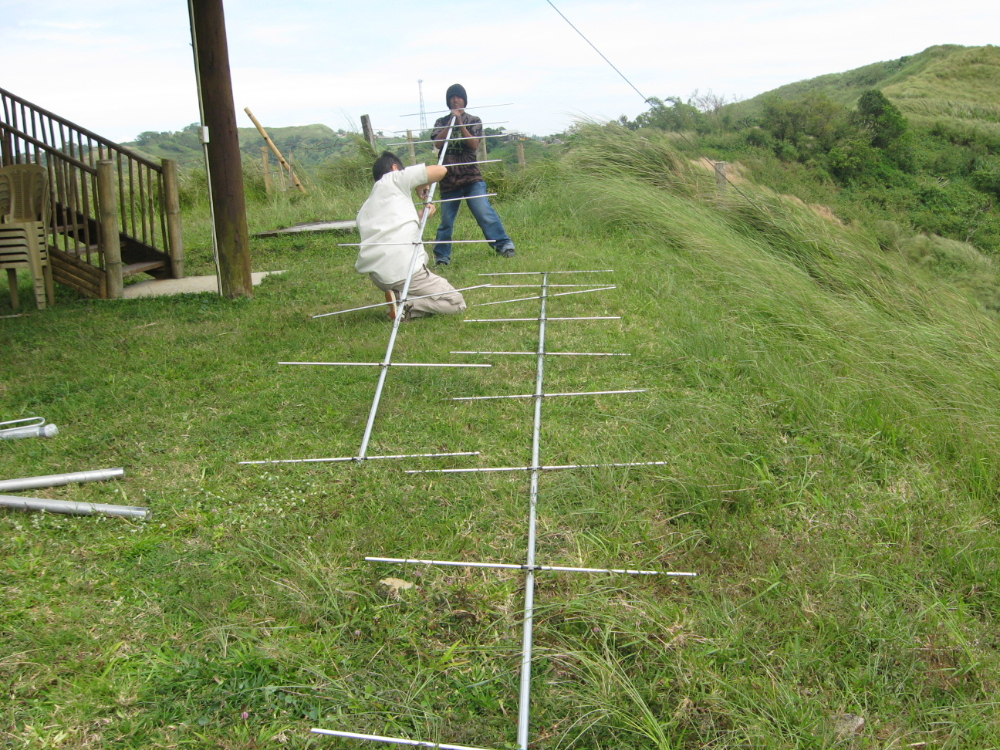 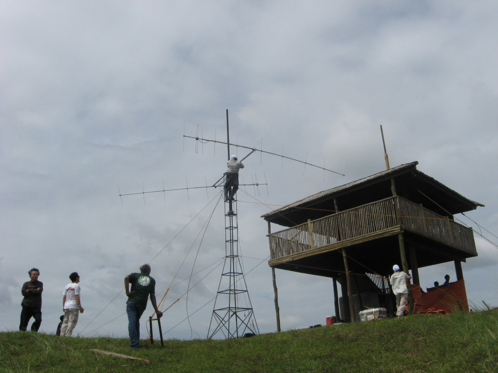 アンテナエレメントを補強しながら組み立て/強風をおしてアンテナの取り付け作業 午後になって、"リニアー担当"のJF2XGF/大橋さんがDU1EV・Eddieの車で到着。 入れ違いにアンテナ工事を済ませたメンバー4人(JA1BRK、JA1TGC、JF1IST、7N4TJR)は、 翌日のDU1ZV宅のアンテナ工事のため、運用担当の私(JA1RJU)とJF2XGF(大橋)、DU1EVを置いてマニラに引き上げました。 この日は、既に月も上がっていて、北米方面のEMEのスケジュールは始まっているのですが、 日本から"キット状態"で現地に送られた"リニアー・アンプ"が動作しない事には運用は出来ません。 大橋さんは到着早々に大急ぎで組み立て開始です。 DX0EMEの運用開始を待ちきれずに？K6MYC、W5UN、WA4NJPなど、北米のビッグステーションが呼んでくれているとの連絡。 こちらも受信だけは出来るのですが、アンテナのポイントが突風で定まらず、WSJTの画面には何も"見えません"。 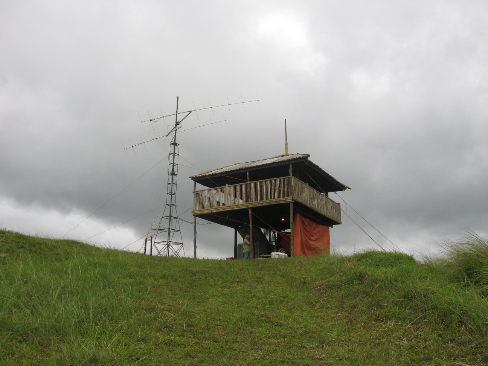 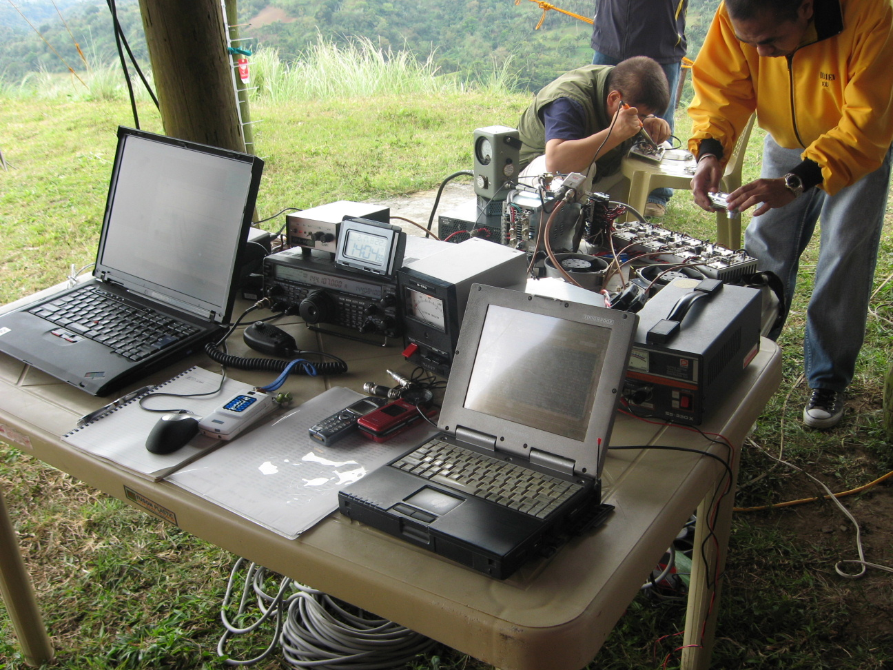 セットアップが完了したDX0EME。"シャック"は冷たい強風が吹き抜ける さっそく危惧した事態が起こりました。組み立てた800Wで働くはずのリニアー・アンプが動作しないのです。 4枚のパワーユニットで"電力合成"している基板に不都合がある様です。調べてみると一枚の基板から"抵抗"が脱落しているのを発見。 輸送中の事故か、現場で組み立て中に脱落したのか部品が無くなっているのです。 「50Wではだめですか？」と大橋さん、「FT-847の50WだけではEMEは無理です」と私。 応急処置として4枚のユニットの中から、一番パワーの出るユニット一枚選び、これをリニアーアンプとして使う事になりました。 一枚だけ300Wの出力が出るユニットがあり、ひとまずホッとしました。 このパワーなら2006年のDZ1JPとほぼ同じです。 夕方には月が真上に上がり(と、言っても雨雲で実際には月は見えない)、ヨーロッパが呼んできます。 北米と違って月が真上にあるこの時間帯はヨーロッパが良く"見えます"。 夜が深まるにつれてますます風も強まり、気温も下がってきました。 昼は半袖にジャンバーを引っ掛けていたのですが、長袖を重ね着しても、吹き付ける風が体温をどんどん奪っていきます。 深夜頃には"歯の根"も合わないほどで、震えが止りませんでした。 "あづまや"の柱の北側の2面を覆った、風避けの分厚いシートも風で膨らんで、留めた部分が破れてきます。 午前3時前に月も西の山に沈み、なんとか初日のスケジュールは終了しました。 われわれ二人は貴重品だけを持って"逃げるよう"に山を下り、道路脇の車中で仮眠していたDU1EVの車で、 午前3時過ぎに近くのリゾート・ホテルの"コテージ"に帰り、就寝。 本日のQSO数は144MHzで24局、13エンティティー。 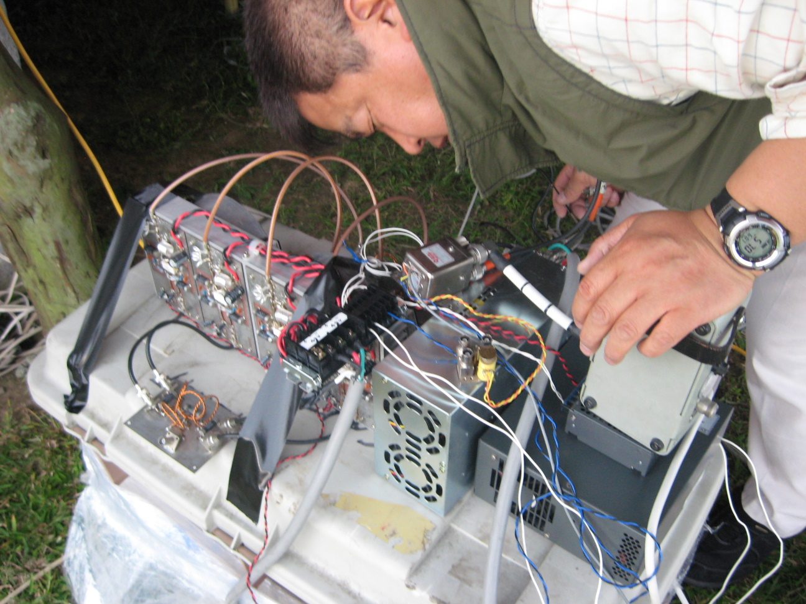 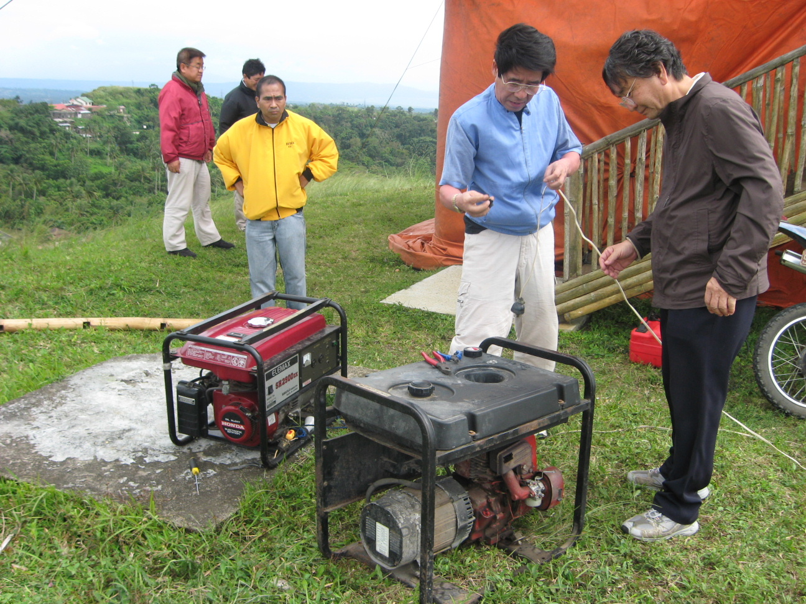 リニアーアンプの調整をするJF2XGF/借り物の発電機をチェックするメンバー ◎ 無念の運用停止 2日目の2/17日も山の上の"シャック"は天気が良いのに相変らず日中から強風が吹き荒れています。 マニラから再び戻ってきた藤原さんを除くメンバー3人と、昨夜の強風で曲がったアンテナエレメントを補修。 夜間の寒さを少しでも和らげようと、メンバーが差し入れてくれた風除けの"防水レインコート"で今夜の寒さは何とかしのげそう。 日曜日のこの日は、午後から地元のハムに"EME運用の公開"を行う事になっていました。 周囲が暗くなりかけてから、数組の子供連れの家族が山の上まで見学に来てくれましたが、 われわれのEME運用はあまり理解出来なかったと思われます。 ただ、剥き出しの"リニアーアンプ"には興味を示した局は居たようです。 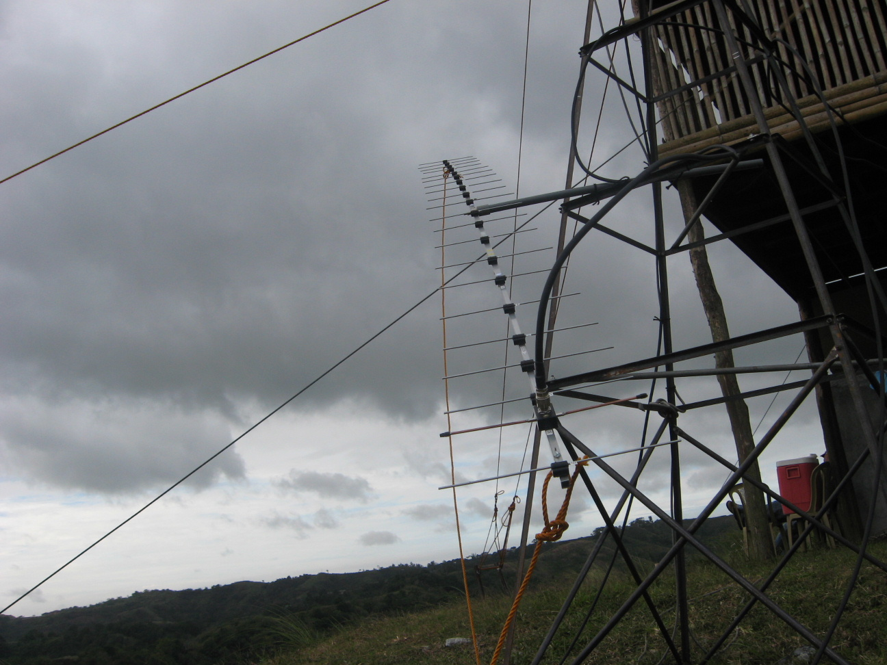 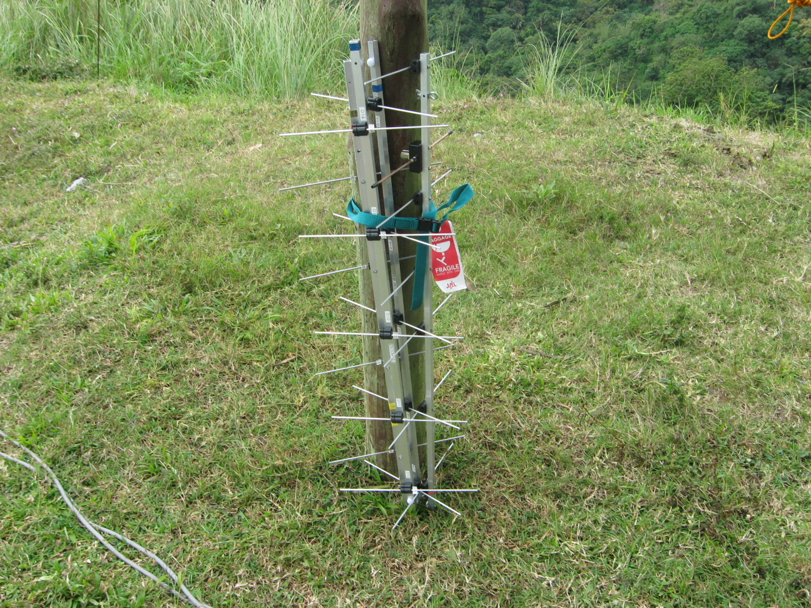 432MHzのアンテナはタワー横に。時間外には強風で飛ばない様に柱に...。 昨夜よりも雲の切れ目から月は見えますが、前日にも増して風が強く、アンテナはタワーの根本から揺れて今にも倒壊しそうです。 アンテナも横風を受け、弓なりになって大揺れに、揺れています。 ローテーターの目盛りは月に向いていても、アンテナ方向は定まりません。 深夜、遂に強風はわれわれの運用している"あずまや"全体を揺らし始めました。 防風のシートは帆船の帆の様に膨らんでバタバタと端の方から破れてきました。このままでは"あずまや"ごと飛ばされそうです。 一緒に待機している地元の担当者(ハムではない)も、気が気ではないらしく、シートの補修に走り廻っています。 EMEのQSOはヨーロッパを中心に、この悪条件の中でも呼んできてくれましたが、最後はアンテナを回す事も出来ない危険な状態となり、 1630z(現地時間2/18の0030時）に144MHzでの運用停止を決めました。 事前に決めていた1700z(現地時間2/18日の0100時)からの432MHzでのHB9Qとのスケジュールを残し、144MHzは全て終了。 HB9Qとのスケジュールは21ELのシングル・アンテナに1mほどのマストを付けて、 比較的風当たりの少ない物陰にJF2XGF・大橋さんが"バズーカ砲"の様に肩に担いで、アンテナを月に向けるといった方法で運用、 なんとかQSOに成功しました。 この日の144MHzのQSOは25局、4エンティテー。432MHzで1局。 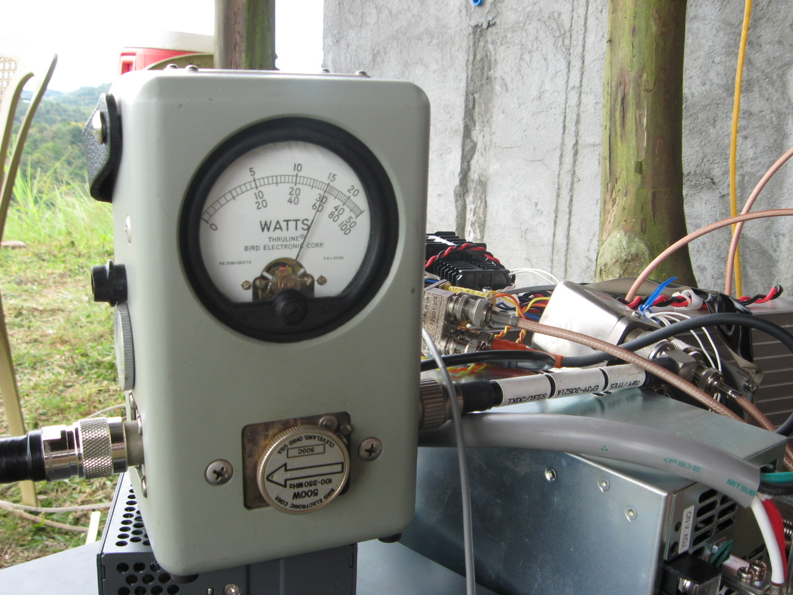 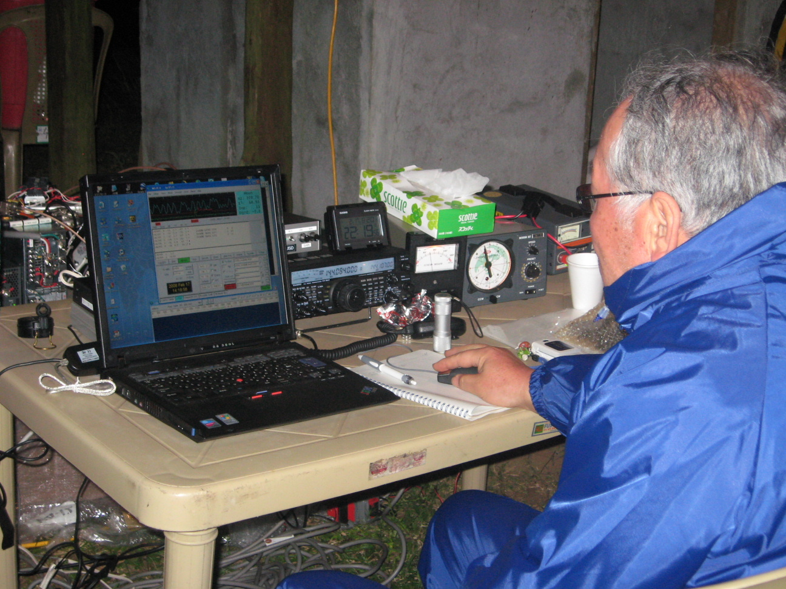 144MHzは出力300Wで運用。"防寒具"を着てDX0EMEを運用するJA1RJU この連日の強風は、北西からの冬場の季節風でフィリピンでは時期なもの。まだ1、2日では治まりそうもないとの事なので、 DX0EMEの運用スケジュールは一日繰り上げて、この日で終了を決定。 翌2/18日の午前中にアンテナも全面撤収してマニラに引き上げました。 結局、今回の2日間によるDX0EMEの運用の総QSO数は144MHzで49局、17エンティティー、432MHzで1局でした。 予想もしていなかったフィリピンの気象条件と、パワーの不足というアクシデントで、 当初予定していた成果を上げる事は出来ませんでしたが、昨年のDX0JPのスプラトリーを含めて、 フィリピンからの3度の運用で、海外でのEME運用の"ノウハウ"を得られた事は、 次回からの移動運用に大いに役立つものとなるでしょう。 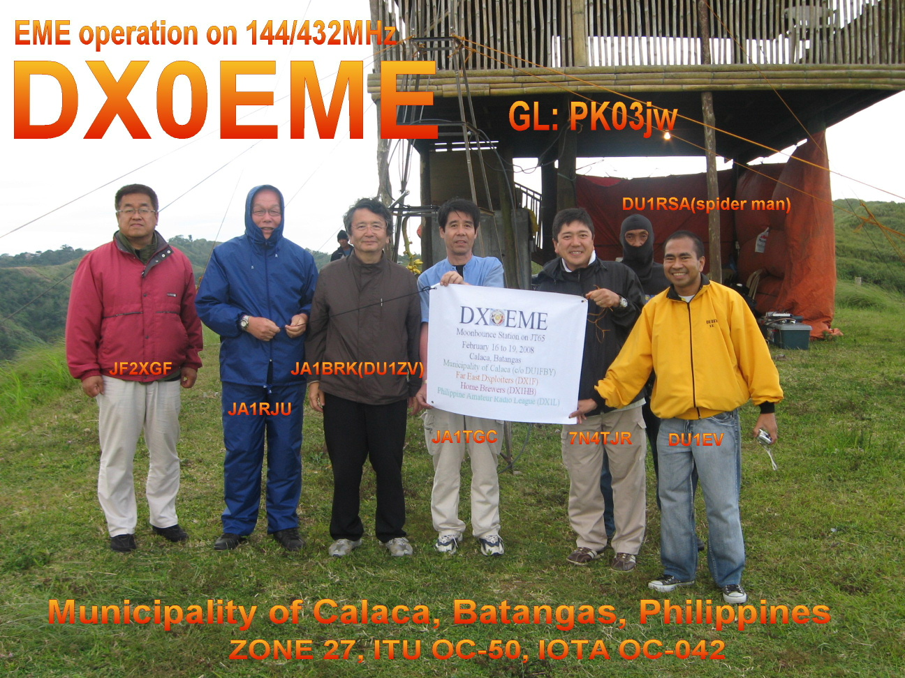 DX0EME初日の運用の様子を撮った3本の短いビデオがDU1EVから「You Tube」のWeb-siteに紹介されています。 http://www.youtube.com/watch?v=oOuK05uigZM&feature=related
◎ 今回のDX0EME運用の前日の2/15日、マニラのDU1ZV(JA1BRK=米村)宅から、
DX1Fのコールサインで432MHzのEMEを運用しました。 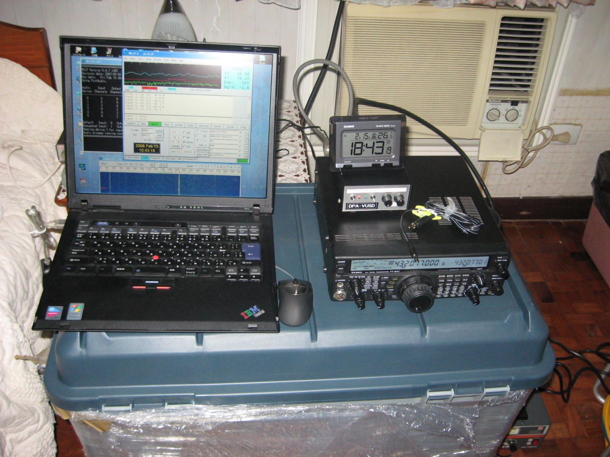 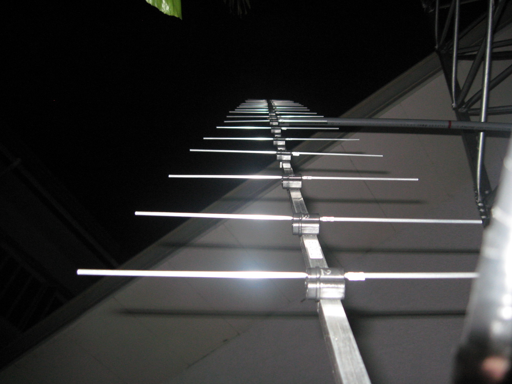 432MHzでDX1Fを運用、21ELシングルと50WでHB9QとのQSOに成功 ◎ 今回のDX0EMEの運用に際し、144MHzのアンテナの設計、製作をJH0MHE・小林さんに、 432MHzのアンテナの設計・製作にJK7TKE・福井さんのご協力を頂きました。 |

|